JBoss Apiman: Hands on Lab
Jakub Čecháček <jcechace@redhat.com>
1. Download and Run JBoss apiman
Download
Install
$ unzip wildfly-8.2.0.Final.zip
$ unzip apiman-distro-wildfly8-1.2.0.Alpha2-overlay.zip -d wildfly-8.2.0.FinalRun
$ cd wildfly-8.2.0.Final
$ ./bin/standalone.sh -c standalone-apiman.xml11:02:54,989 INFO [org.jboss.as.server] (ServerService Thread Pool -- 29) JBAS018559: Deployed "services.war" (runtime-name : "services.war")
11:02:54,989 INFO [org.jboss.as.server] (ServerService Thread Pool -- 51) JBAS018559: Deployed "main-auth-server.war" (runtime-name : "main-auth-server.war")
11:02:54,989 INFO [org.jboss.as.server] (ServerService Thread Pool -- 29) JBAS018559: Deployed "authtest-ds.xml" (runtime-name : "authtest-ds.xml")
11:02:54,990 INFO [org.jboss.as.server] (ServerService Thread Pool -- 29) JBAS018559: Deployed "apimanui.war" (runtime-name : "apimanui.war")
11:02:54,990 INFO [org.jboss.as.server] (ServerService Thread Pool -- 29) JBAS018559: Deployed "apiman.war" (runtime-name : "apiman.war")
11:02:54,990 INFO [org.jboss.as.server] (ServerService Thread Pool -- 29) JBAS018559: Deployed "apiman-gateway.war" (runtime-name : "apiman-gateway.war")
11:02:54,990 INFO [org.jboss.as.server] (ServerService Thread Pool -- 29) JBAS018559: Deployed "apiman-gateway-api.war" (runtime-name : "apiman-gateway-api.war")
11:02:54,990 INFO [org.jboss.as.server] (ServerService Thread Pool -- 29) JBAS018559: Deployed "apiman-es.war" (runtime-name : "apiman-es.war")
11:02:54,990 INFO [org.jboss.as.server] (ServerService Thread Pool -- 29) JBAS018559: Deployed "apiman-ds.xml" (runtime-name : "apiman-ds.xml")
11:02:54,997 INFO [org.jboss.as] (Controller Boot Thread) JBAS015961: Http management interface listening on http://127.0.0.1:9990/management
11:02:54,998 INFO [org.jboss.as] (Controller Boot Thread) JBAS015951: Admin console listening on http://127.0.0.1:9990
11:02:54,998 INFO [org.jboss.as] (Controller Boot Thread) JBAS015874: WildFly 8.2.0.Final "Tweek" started in 10477ms - Started 935 of 1060 services (203 services are lazy, passive or on-demand)
11:02:55,000 INFO [org.elasticsearch.gateway] (elasticsearch[Gronk][clusterService#updateTask][T#1]) [Gronk] recovered [1] indices into cluster_state2. Deploy The Echo Quickstart
Clone the repository
$ git clone https://github.com/apiman/apiman-quickstarts.gitBuild
$ cd apiman-quickstarts
$ mvn clean install -DskipTestsDeploy
$ cd "echo-service"
$ mvn wildfly:deployFor the purpose of this lab we are deploying to the same server as the one used by apiman. In production environment you would use a separate deployment server.
Try the service
$ curl http://localhost:8080/apiman-echo
{
"method" : "GET",
"resource" : "/apiman-echo",
"uri" : "/apiman-echo",
"headers" : {
"Accept" : "*/*",
"User-Agent" : "curl/7.43.0",
"Host" : "localhost:8080"
},
"bodyLength" : null,
"bodySha1" : null
}The response from apiman-echo endpoint is a JSON formatted information about the request.
3. Management REST API
Accessing the REST API
Available at http://localhost:8080/apiman
Documentation available here
Username: "admin"
Password: "admin123!"
Postman REST client
Import request collection
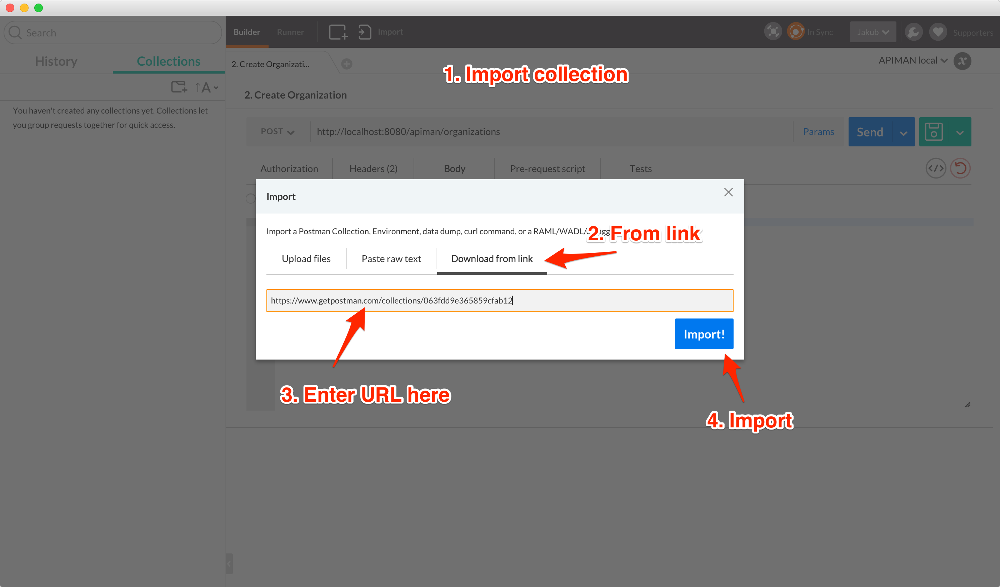
Using the REST API
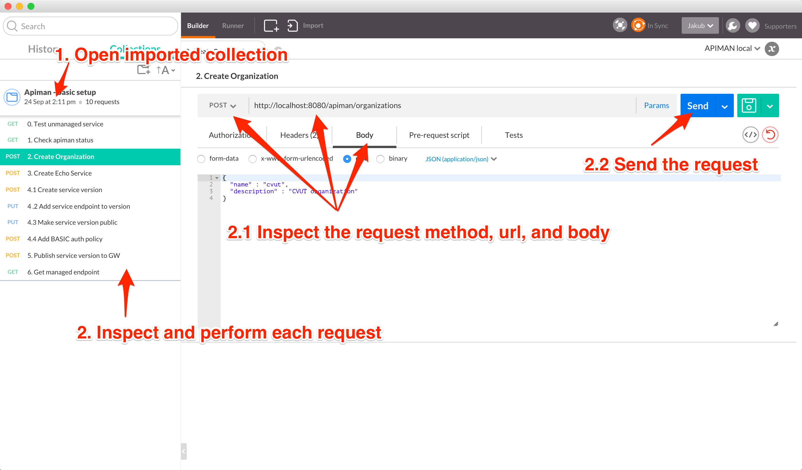
4. Meet the Management UI
Accessing the Management UI
Point your browser to http://localhost:8080/apimanui
Username: "admin"
Password: "admin123!"
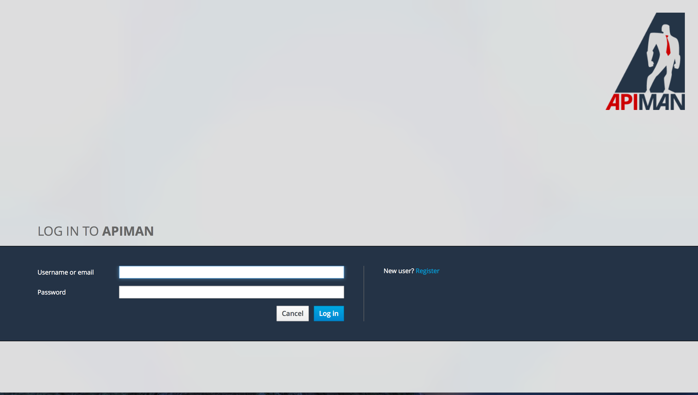
Manage organizations
Inspect the previously created "cvut" organization
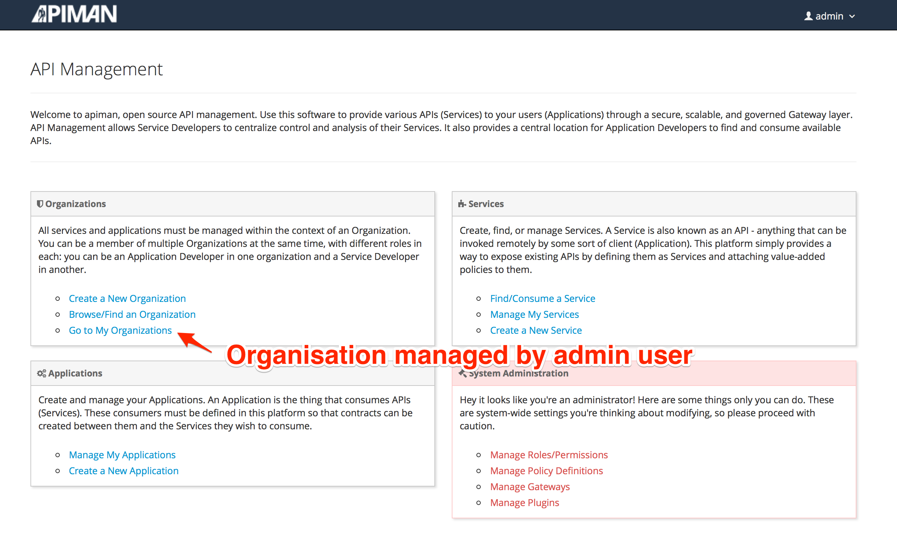
5. Manage plans in UI
Create a Plan
Create a new plan under the "cvut" organization
Name it "student-plan"
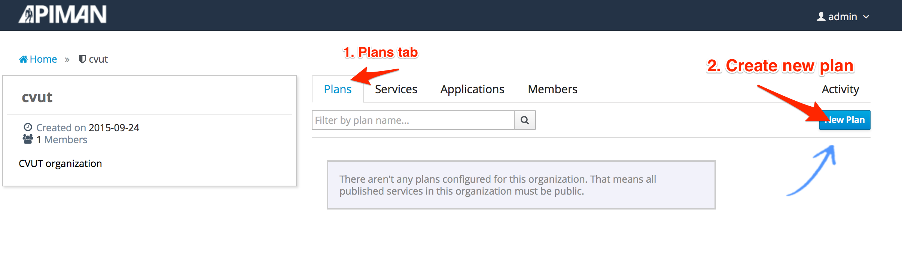
Add Rate Limit
Add a Rate Limiting policy
Allowing 20 requests per application to service per minute
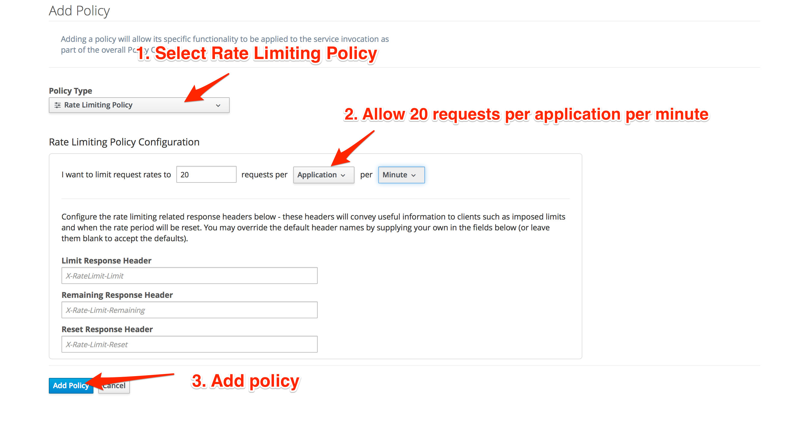
Lock the plan
Once locked, plan can be used by services
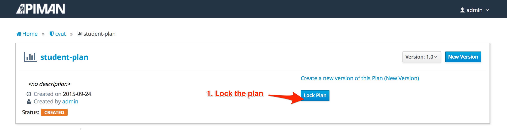
Create Second Plan
Add another plan to the "cvut" organization
Name it "professor-plan"
Services under this plan will accept only 10 requests per minute from each app
Don’t forget to lock the plan
6. Manage Services in UI
Manage Services
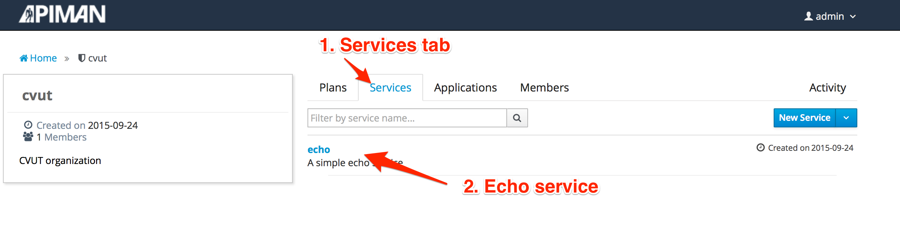
Create New Service Version (Echo 2.0)
Create a new version of echo service.
Clone the configuration from version 1.0
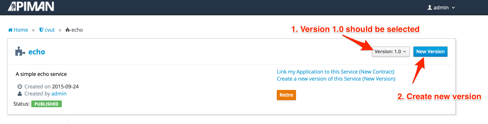
Service and Plans
Echo 2.0 will be available through created plans
This version will not be publicly accessible
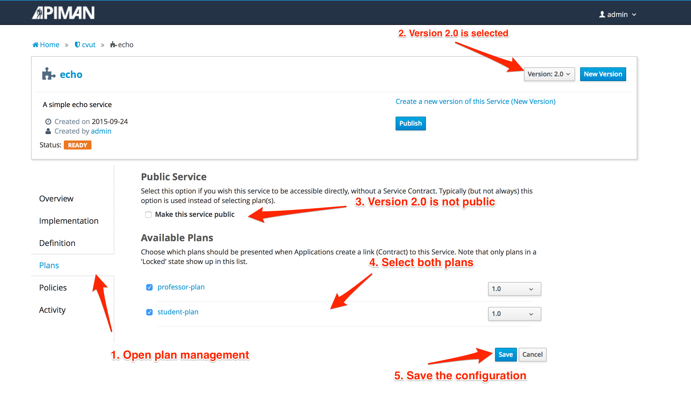
Publish service version
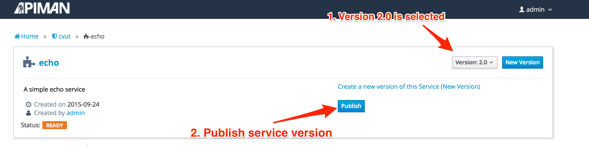
7. Manage Applications in UI
Create an Application
Create new application
Name it "StudentApp"
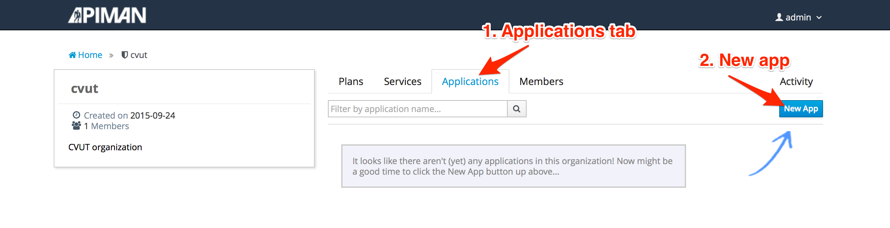
Add Service Contract
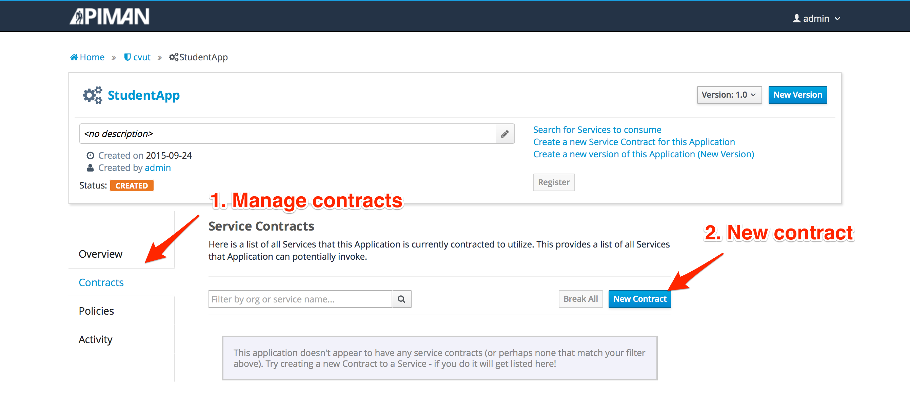
Add Service Contract: Application
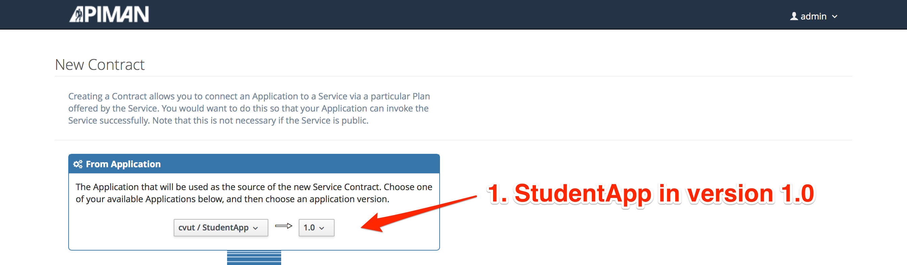
Add Service Contract: Service
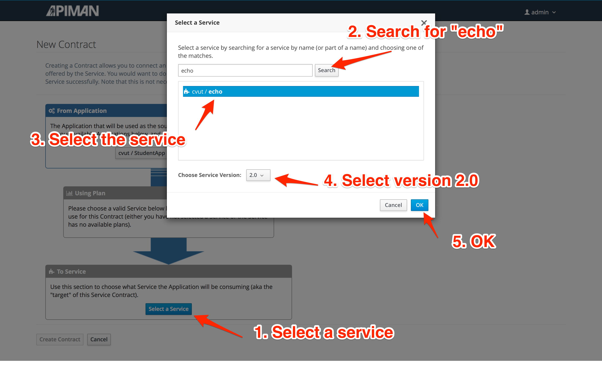
Add Service Contract: Plan
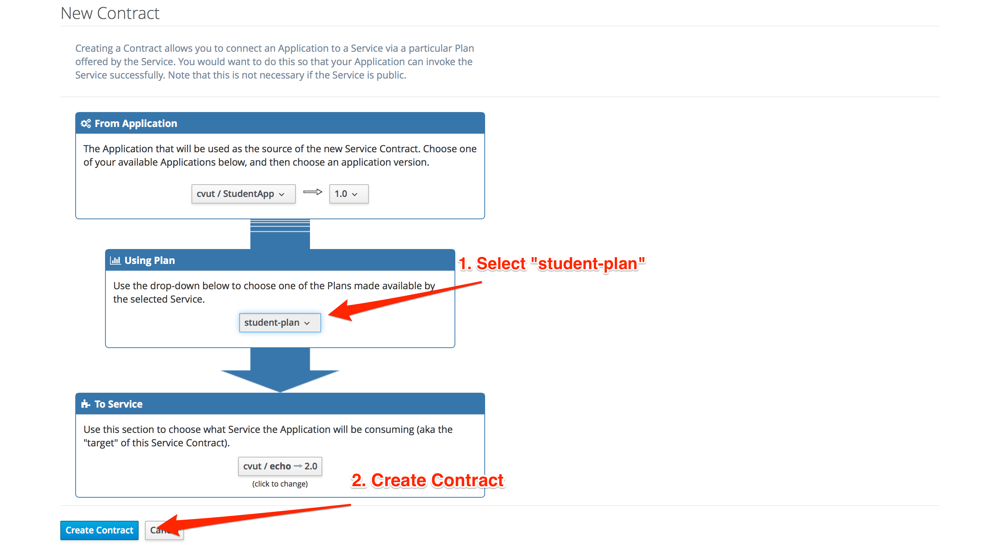
Register the Application
Once registered, the application will be assigned an API key for each service contract
Obtain managed endpoint
Try to invoke the echo service as "StudentApp"
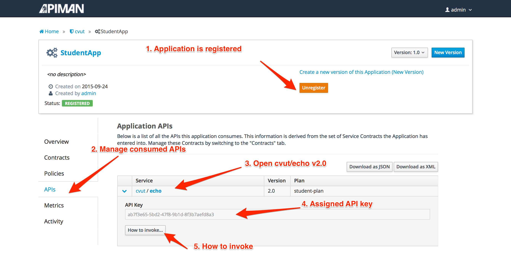
Create Second Application
Create new application
Name it "ProfessorApp"
This app will use the echo service through the "professor-plan"